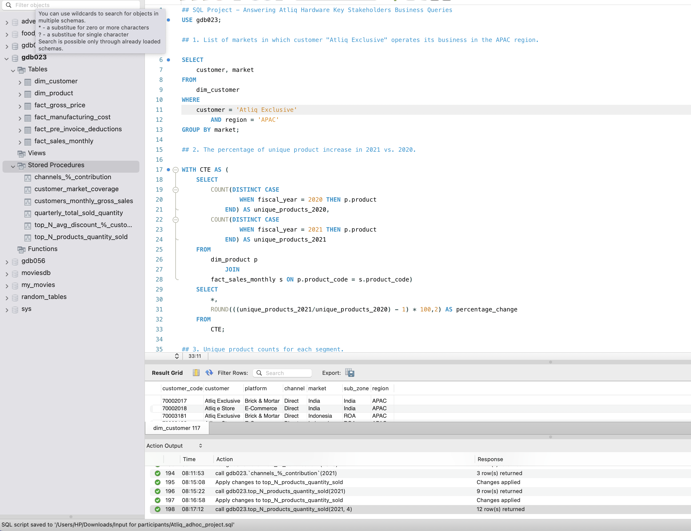

Atliq Hardware Analytics Project
Project Description
Tools: MySQL, PowerPoint
This project demonstrates my ability to translate real business questions into efficient SQL
queries that deliver actionable insights. Using Atliq Hardware’s dataset, I answered 10 stakeholder
questions covering market operations, product performance, customer behavior, and sales analysis.
It also showcases my ability in automating data analytics process by creating stored procedures for
routine analysis.

Download Presentation Slide (PPTX)
Download SQL File
Project Objectives
The objectives of this project are simply stated as follows:
- Understand business requirements from a stakeholder’s perspective.
- Apply SQL techniques (joins, aggregations, CTEs, window functions) to extract insights.
- Create stored procedures for routine analysis.
- Present findings clearly through both SQL outputs and a business presentation.
Key Queries and Insights
- Market Operations - Identified customers' market coverage by region and created a stored procedures for routine process
- Product Growth - Calculated the percentage increase in unique products between 2020 and 2021
- Segment Analysis - Counted unique products by segment and ranked them to identify which segment is experiencing product growth
- Growth by Segment - Found segment with the largest increase in unique products year-over-year.
- Cost Extremes - Retrieved products with the highest and lowest manufacturing costs.
- Customer Discounts - Ranked top 5 customers with the highest average pre-invoice discount in a year and a specific market.
This is stored in a procedure as this is required for different years and markets.
- Monthly Sales - Calculated gross monthly sales for specific customers.
This is also stored in a procedure for easy generation of gross monthly sales for each customers.
- Quarterly Sales Volume - Found the quarterly sold quantity per year. This is to identify the period with highest sold quantity.
This is stored in a procedure for different years.
- Channel Performance - Measured each sales channel's contribution to gross sales in a year.
This is also stored in a procedure for different years.
- Best-Selling Products - Identified the top N products per division in a fiscal year.
This is stored in a procedure to ensure the top N is dynamic and for different years.
Techniques Used
- Joins - To merge product, sales, and customer datasets.
- CTEs - For step-by-step query structuring.
- Window Functions - For ranking (DENSE_RANK) and calculating percentage contributions (SUM OVER) and PARTITION
- Conditional Aggregation - To compare year-over-year changes.
- Aggregation & Grouping - To summarise business metrics.
Skills Demonstrated
- SQL for business analytics.
- Problem-solving with data.
- Data storytelling through visuals & presentations.
- Applying analytical thinking to business decision-making.
Conclusion
This project showcases my ability to go from raw data to actionable insights using SQL. Each query was designed with business
relevance in mind, ensuring stakeholders receive clear, concise, and decision-ready information.